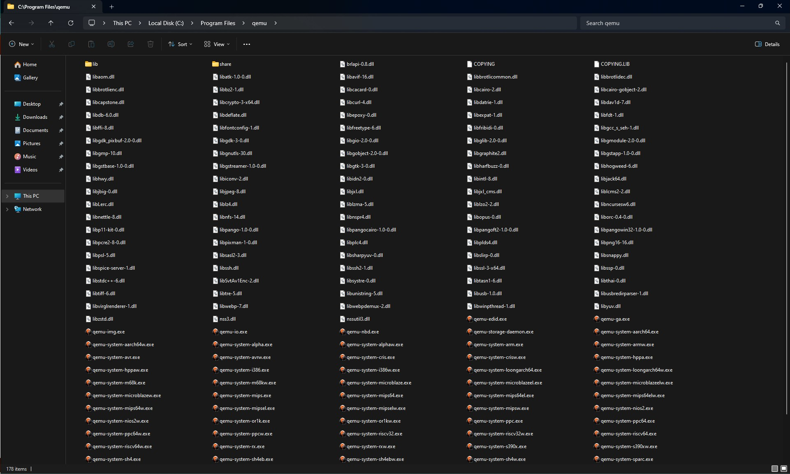
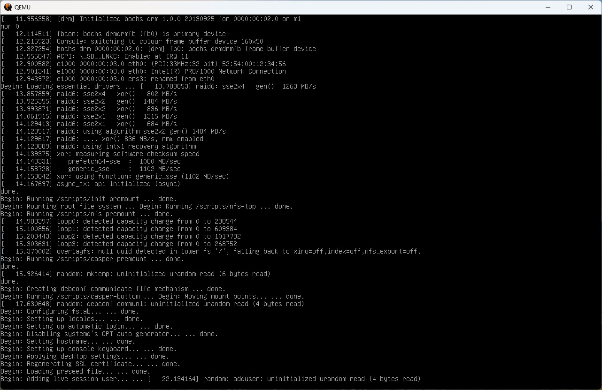
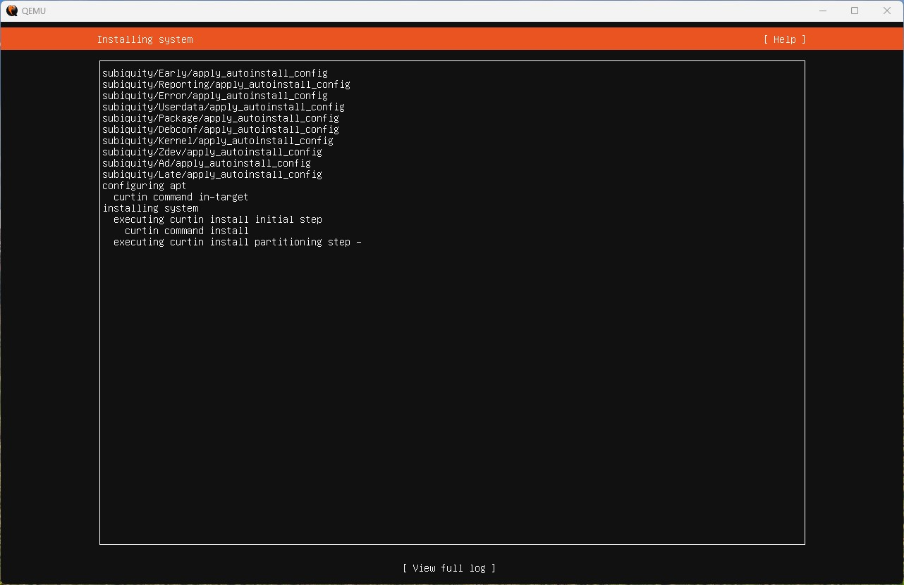
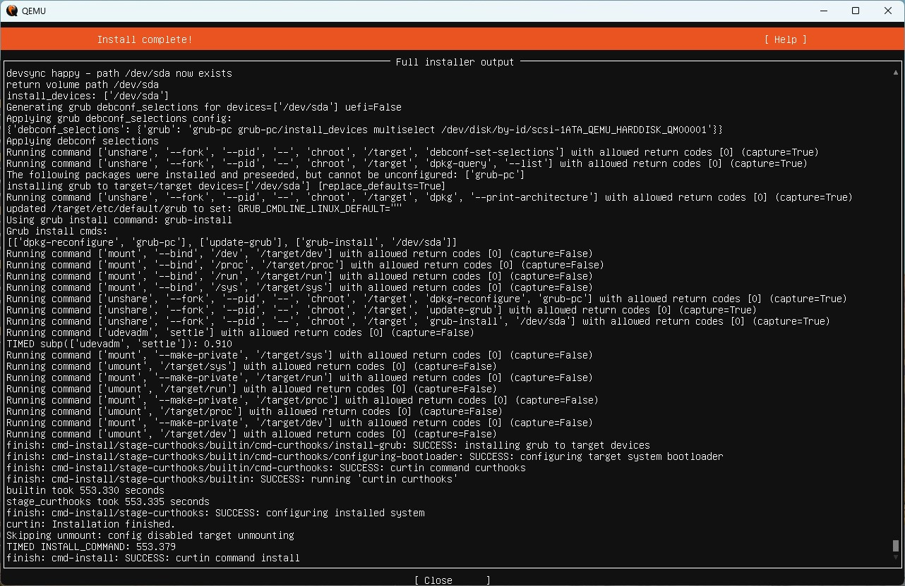
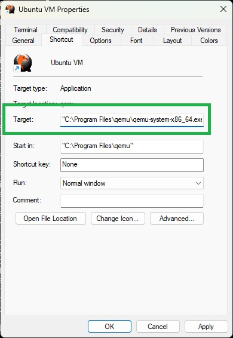
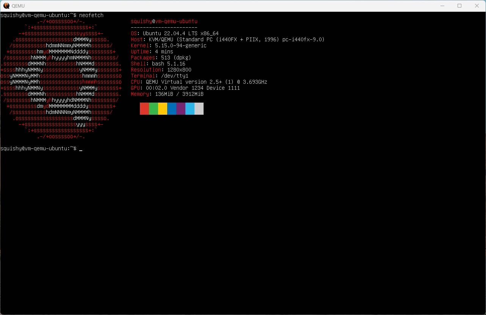

Basic QEMU on Windows 11
I'm excited to share a quick guide on how to run QEMU on Windows 11. QEMU is a powerful open-source virtual machine monitor and emulator that allows you to run a virtualized guest operating system on your host machine. In the past I've used Oracle's Virtual Box and Microsoft Hyper-V to virtualize guests on my desktop computer. However, QEMU is a much more powerful tool. I've been pushing the people around me to be more comfortable with using the command-line on their machines. One of the barriers that people see with QEMU is that it is completely command-line based. There is no "out-of-the-box" GUI for QEMU on Windows, although 3rd party wrappers do exist out there.
In this guide we will be quickly setting up QEMU on a Windows 11 system and then running an Ubuntu virtual machine from the command line.
The Guide
Download and install QEMU
Download the required software. This guide does not cover compiling the source for QEMU on Windows 11. You can find the binaries and installers from Stegan Weil here: - https://qemu.weilnetz.de/w64/
Follow the on-screen instructions to complete the installation process. By default, QEMU will be installed in the Program Files directory on your Windows 11 system. You will end up with a directory that looks like this: 
Yikes! So what do we do with all of this? If you have Windows Terminal installed on your computer, you'll be able to right-click and open the directory in a new Terminal window.
Create the virtual machine
Download Ubuntu Server
Now make sure to have a ISO image of Ubuntu Server 22.04.4 LTS. In this guide we are going to be spinning this up from the command-line. You can download the ISO image from here: - https://ubuntu.com/download/server/thank-you?version=22.04.4&architecture=amd64
Create a virtual disk
Once that is installed in your terminal window, run the following command:
.\qemu-img.exe create -f qcow2 ubuntu-test.img 32G
Here is a quick breakdown of what we just did:
.\qemu-img.exe
- This is the command-line tool provided by QEMU for creating, converting, and managing disk images.
create -f qcow2
- This is the subcommand of qemu-img used to create a new disk image. This option specifies the format of the disk image to be created. We've set it to "qcow2", which stands for QEMU Copy-On-Write version 2. QCOW2 is a disk image format that supports advanced features like snapshots and encryption.
- You can find more information on the QCOW2 format here: https://github.com/zchee/go-qcow2/blob/master/docs/specification.md
- Note: The original documentation seems to be removed from GitHub.
ubuntu-test.img
- This is the name of the image.
32G
- This is the size of the image.
Create the virtual machine and install Ubuntu
Now with the disk image created. It we can install the operating system. In the same directory in the terminal window, run the following command:
.\qemu-system-x86_64.exe -boot d -cdrom "C:\Users\squishy\Desktop\ubuntu-22.04.4-live-server-amd64.iso" -drive file=ubuntu-test.img,format=qcow2 -m 4G -display sdl -accel tcg -net nic,model=virtio -net user -vga std
You'll get a window that looks like this: 
While Ubuntu is installing, your screen will look like this: 
Wait for the machine to boot. We'll then configure the Ubuntu VM. When you're all done, your screen should look like the following: 
Explaining the command
.\qemu-system-x86_64.exe -boot d -drive file=ubuntu-test.img,format=qcow2 -m 4G -display sdl -accel tcg -net nic,model=virtio -net user -vga std
-boot d
- This flag specifies that the VM should boot from the first bootable device.
-drive file=ubuntu-test.img,format=qcow2
- This option adds a drive to the virtual machine. Here, file=ubuntu-test.img specifies the disk image file (ubuntu-test.img), and format=qcow2 specifies the format of the disk image.
-m 4G
- This sets the amount of memory (RAM) allocated to the virtual machine to 4 GB.
-display sdl
- This sets the display to use the Simple DirectMedia Layer (SDL) for output.
-net nic,model=virtio -net user
- These options set up networking for the virtual machine.
-vga std
- This sets the type of VGA adapter to use.
Run virtual machine
Once Ubuntu server was installed, you'll be able to run your virtual machine with this command:
.\qemu-system-x86_64.exe -boot d -drive file=ubuntu-test.img,format=qcow2 -m 4G -display sdl -accel tcg -net nic,model=virtio -net user -vga std
You can also create a shortcut to this using the following settings under Target:
"C:\Program Files\qemu\qemu-system-x86_64.exe -boot d -drive file=ubuntu-test.img,format=qcow2 -m 4G -display sdl -accel tcg -net nic,model=virtio -net user -vga std"

Note: Be sure to run the shortcut as admin!
Here is the finished Ubuntu VM running on QEMU: 
Thoughts
Thank you for checking out my guide on creating a simple Ubuntu VM using QEMU on Windows 11. QEMU's built-in accelerator is really slow. Attempting to enable Windows Hyper-V support seems to be broken at the moment with the current binaries and Intel has dropped support for HAXM. This makes running x86-64 based machines with QEMU really slow at the moment.